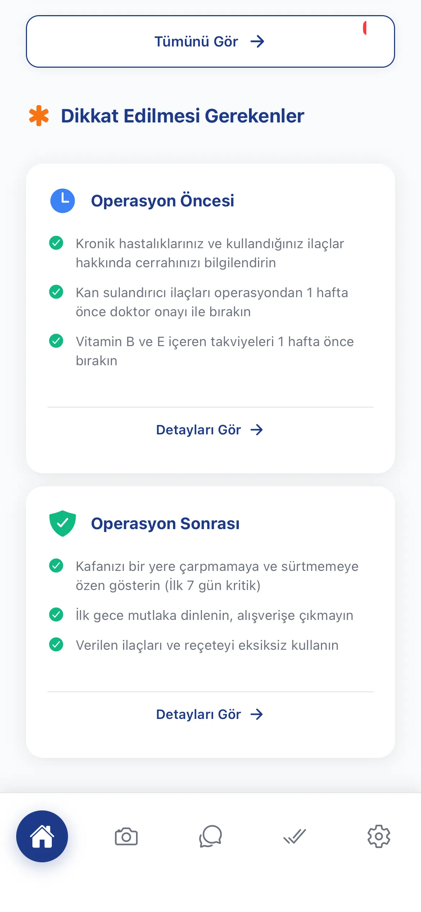
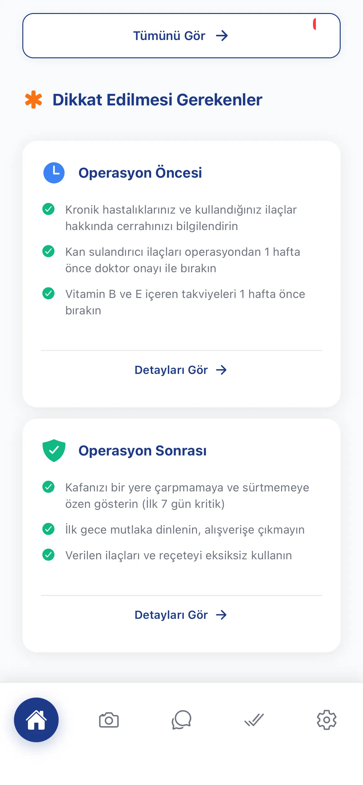

Saç Ekimi Sonrası Tahmini Fotoğraflar
Kullanıcının 3 açıdaki fotoğrafını alıp 1 hafta, 1 ay ve 1 yıl sonrası tahmini görünüm görüntülerini üretiyoruz. Bu özellik kullanıcı motivasyonunu dramatik şekilde artırıyor.
1 Hafta
Sonrası
1 Ay
Sonrası
1 Yıl
Sonrası

RAG Tabanlı Bilgi Motoru
Smile Hair Clinic'in tüm metinsel içeriğini işleyip bir RAG (Retrieval-Augmented Generation) tabanlı bilgi motoru oluşturduk.
Nasıl Çalışıyor?
- 1. Smile Hair Clinic'in internet sitesindeki blog yazıları, makaleler ve genel bilgiler markdown dosyalarına dönüştürüldü
- 2. Kullanıcı sorusu geldiğinde yapay zeka soruyu analiz ederek en doğru kaynağı buluyor
- 3. İlgili sayfanın içeriğine erişip otoriter bir cevap üretiyor
"Saç ekimi sonrası banyo yapabilir miyim?"
AI, en az bir müşteri temsilcisinin vereceği cevap kadar güvenilir yanıtlar üretiyor.
Saç Ekimi Öncesi & Sonrası Yol Haritası
Operasyon öncesi ve sonrası görevler: Sigara bırakma süresi, operasyon hazırlığı, yıkama talimatları, bakım adımları. Kişisel bir yol haritası gibi çalışıyor.
 
